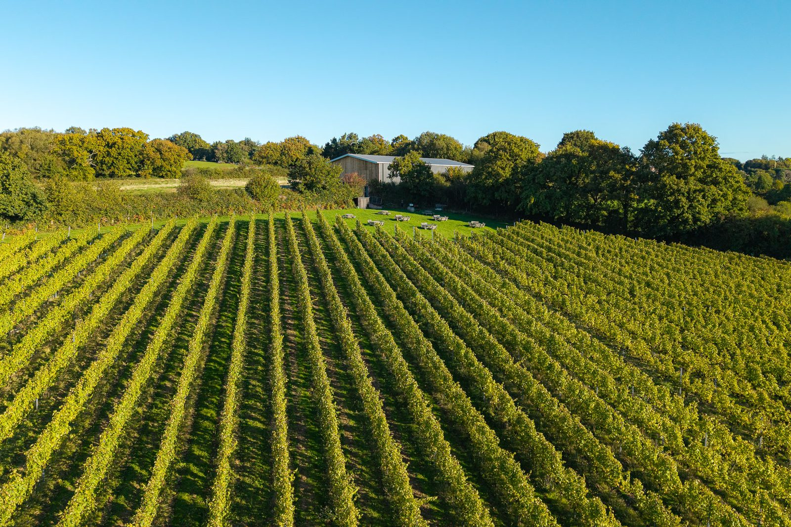

The Wealden Wine Trail
Beacon Down Vineyard
Estate-verified · October 2026
A family vineyard in the High Weald with a café and shop open six days a week, tours on most Saturdays, and picnics you can book whenever you like.

The visit
Beacon Down is an easy one to fit into a day: the café takes walk-ins, picnics can be booked at any time, and tours run on most Saturdays.
Tours on most Saturdays
Tours and tastings are expected to run on most Saturdays, and from 2027 on other days too.
Open Tuesday to Sunday
The café and shop are open Tuesday to Saturday, 9am to 6pm, and Sundays, 10am to 5pm. They may close a little earlier in the winter months.
Walk in for lunch, or book a picnic
The café caters for walk-ins, and picnics can be booked at any time, with no set notice period.
Seasonal teas and workshops
As well as the Halloween afternoon teas, the estate runs Christmas afternoon teas, food and wine tasting events, and a wreath-making workshop on 2 December.
Wine, local food and the view
Asked what a first-time visitor shouldn’t miss, the estate’s answer was award-winning wines and delicious local produce with breathtaking vineyard views.
Nearest station: Uckfield (15 min). Sussex vineyards sit down winding lanes, so check parking and access with the estate if you’re not driving.
Common questions
When are the tours at Beacon Down Vineyard?
Tours and tastings are expected on most Saturdays, and from 2027 on other days too.
When is the Beacon Down café open?
Tuesday to Saturday 9am to 6pm, and Sunday 10am to 5pm. It may close a little earlier in winter.
Do you need to book food at Beacon Down?
No. The café caters for walk-ins, and picnics can be booked at any time.
What events does Beacon Down run?
Halloween and Christmas afternoon teas, food and wine tasting events, and a wreath-making workshop on 2 December.
What’s the nearest station to Beacon Down Vineyard?
Uckfield (15 min). It’s not a walk, so allow for a taxi from the platform.
At a glance
- Where
- Heathfield, East Sussex
- Tours & tastings
- Most Saturdays (more days from 2027)
- Café & shop
- Tue–Sat 9am–6pm, Sun 10am–5pm
- Food on site
- Yes: walk-in café, picnics to book
- Stay on site
- Checking with the estate
- Dogs
- Checking with the estate
- Nearest station
- Uckfield (15 min)
Also on the Wealden Wine Trail
- Rathfinny Wine Estate Alfriston / Seaford
- Bluebell Vineyard Estate Furners Green / Uckfield
- Coes Farm Rotherfield
- Mousehall Distillery & Vineyard Wadhurst / Crowborough
Also from Uckfield
- Coes Farm Uckfield (20 min)
- Winklestone Vineyard Uckfield (bus 29)